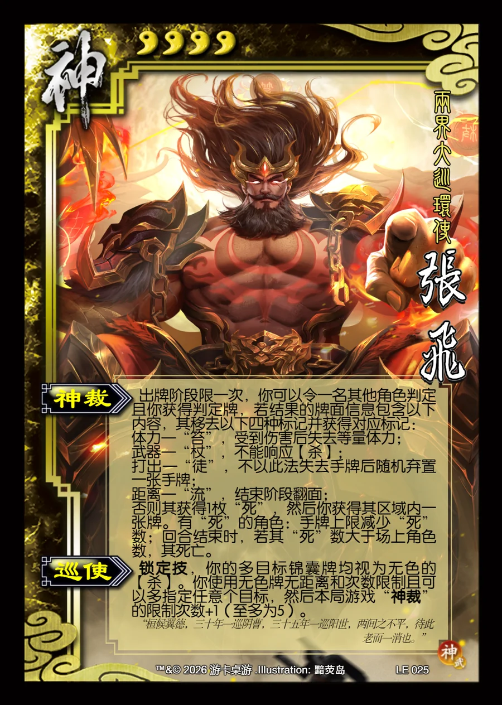

点击卡面查看大图
神
神张飞
♥4两界大巡环使
神裁
出牌阶段限一次，你可以令一名其他角色判定且你获得判定牌，若结果的牌面信息包含以下内容，其移去以下四种标记并获得对应标记：
体力—“笞”，受到伤害后失去等量体力；
武器—“杖”，不能响应【杀】；
打出—“徒”，不以此法失去手牌后随机弃置一张手牌；
距离—“流”，结束阶段翻面；
否则其获得1枚“死”，然后你获得其区域内一张牌。有“死”的角色：手牌上限减少“死”数；回合结束时，若其“死”数大于场上角色数，其死亡。
巡使锁定技
锁定技，你的多目标锦囊牌均视为无色的【杀】。你使用无色牌无距离和次数限制且可以多指定任意个目标，然后本局游戏“神裁”的限制次数+1（至多为5）。
“桓候翼德，三十年一巡阴曹，三十五年一巡阳世，两间之不平，待此老而一消也。”